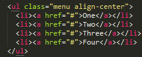
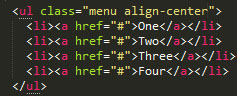
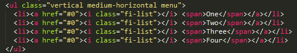

Todas as versões do menu tem <'ul'> preenchidas com <'li'> elementos que contêm links. Por padrão, um menu é orientado horizontalmente. Você também pode escolher a posição onde o menu irá ficar com as class .align-right e align-center junto da class menu
 

Adicione a classe .vertical a um menu para ele fica vertical. Você também pode escolher a posição onde o menu irá ficar com as class .align-right e align-center junto da class menu.

Adicione a classe .Is-active a qualquer <'li'> para criar um estado ativo.

O Menu possui algumas classes CSS, que permitem reorientar um menu em diferentes tamanhos de tela.
Uma barra superior (.top-bar) pode ter duas opções: colocar no lado esquerdo (.top-bar-left) ou colocar no lado direito(.top-bar-right). Em telas pequenas, essas seções se acumulam uma sobre a outra..
Uma lista de paginação é apenas uma <'ul'> com a classe .pagination, e uma série de pares <'li'> / <'a'>. Adicione a classe .corrente a um <'li'> para marcar a página atual, ou .disabled para adicionar estilos desativados a um link.